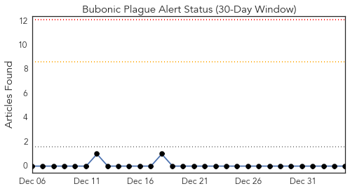
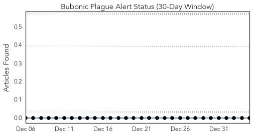
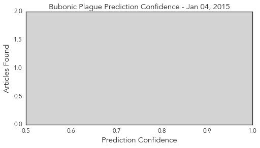
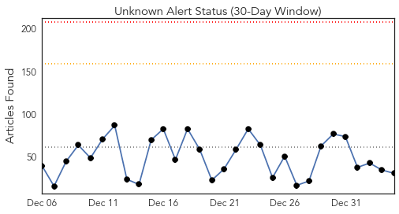
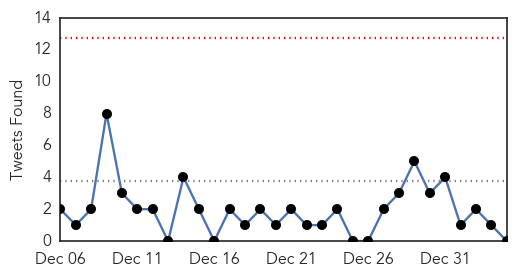
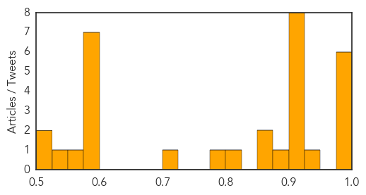

Bubonic Plague
30-Day Web Trend
0 alerts, 0 warnings

30-Day Twitter Trend
0 alerts, 0 warnings

Article Locations
Article Confidences
Top Articles:
-
No articles found for Jan 04, 2015
Top Tweets:
-
No tweets found for Jan 04, 2015
Unknown
30-Day Web Trend
0 alerts, 0 warnings

30-Day Twitter Trend
0 alerts, 0 warnings

Article Locations

Article Confidences
Top Articles:
- 0.996
- Journal: Flu Cases Higher than Normal in SE Idaho
- 0.988
- California flu season 'sporadic,' despite reports of severe flu projections
- 0.982
- Patients get almost no benefit from Tamiflu
- 0.980
- Odisha 360 – News, Events and Complete Information About the State
- 0.980
- KSLA News 12 Shreveport, Louisiana News Weather & Sports
- 0.980
- Seasonal flu hits north China
- 0.948
- 2 Va. hospitals restrict visitors under the age of 18 due to flu concerns
- 0.917
- Chicago Tribune
- 0.917
- Chicago Tribune
- 0.917
- Chicago Tribune
- 0.917
- Chicago Tribune
- 0.917
- Chicago Tribune
- 0.913
- how to protect your family from the flu
- 0.910
- The world windows to Thailand
- 0.903
- Seasonal flu hits north China - Headlines, features, photo and videos from ecns.cn
- 0.880
- Flu Shots Now Required For NYC Preschoolers « CBS New York
- 0.870
- Health - KOAT Home
- 0.866
- U.S., allies conduct air strikes in Syria, Iraq against Islamic State
- 0.813
- Iowa hospitals tighten visitation rules
- 0.800
- For adults, there's more to consider this season than just flu - Crescent-News
- 0.701
- OPERATIONS CANCELLED AS ST MARY'S PRESSURE HITS CRITICAL LEVEL
- 0.585
- A Muslim-run France? Novel sparks Islamophobia row
- 0.585
- New snub for NY mayor at funeral for second slain officer
- 0.585
- Migrant smugglers' dangerous new 'ghost ship' tactic
- 0.585
- India arrests five for kidnap and rape of Japanese tourist
- 0.585
- Outrage as French mayor refuses burial of Roma baby
- 0.585
- French mayor denies refusing burial of Roma baby
- 0.585
- Burundi 'wipes out DR Congo rebel group'
- 0.554
- Alzheimer's disease researchers pursue early detection
- 0.530
- Delaware flu epidemic continues
- 0.514
- Future of the family physician
- 0.513
- Psychological first-aid important to flood victims too
Top Tweets:
-
No tweets found for Jan 04, 2015